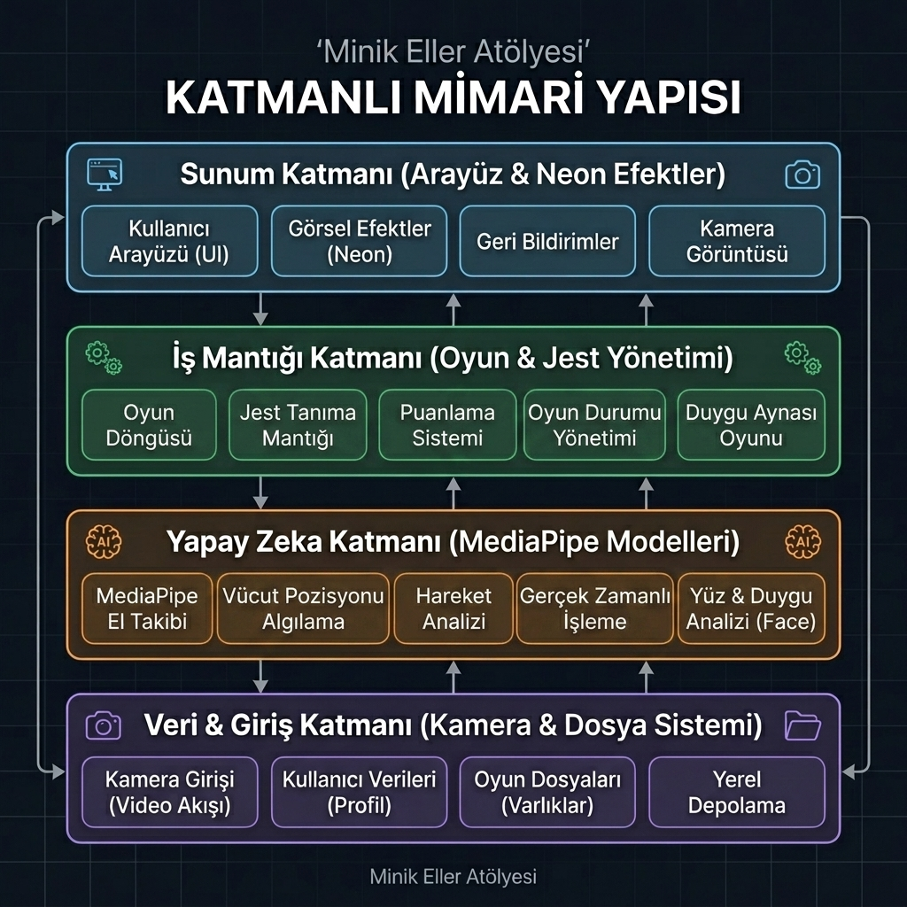
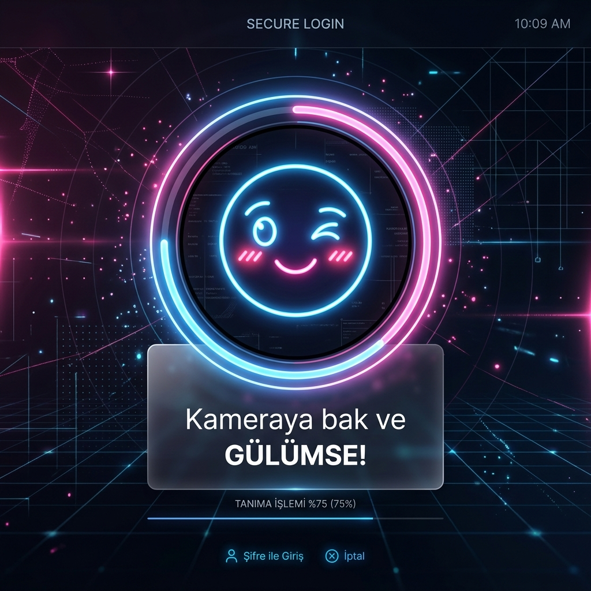
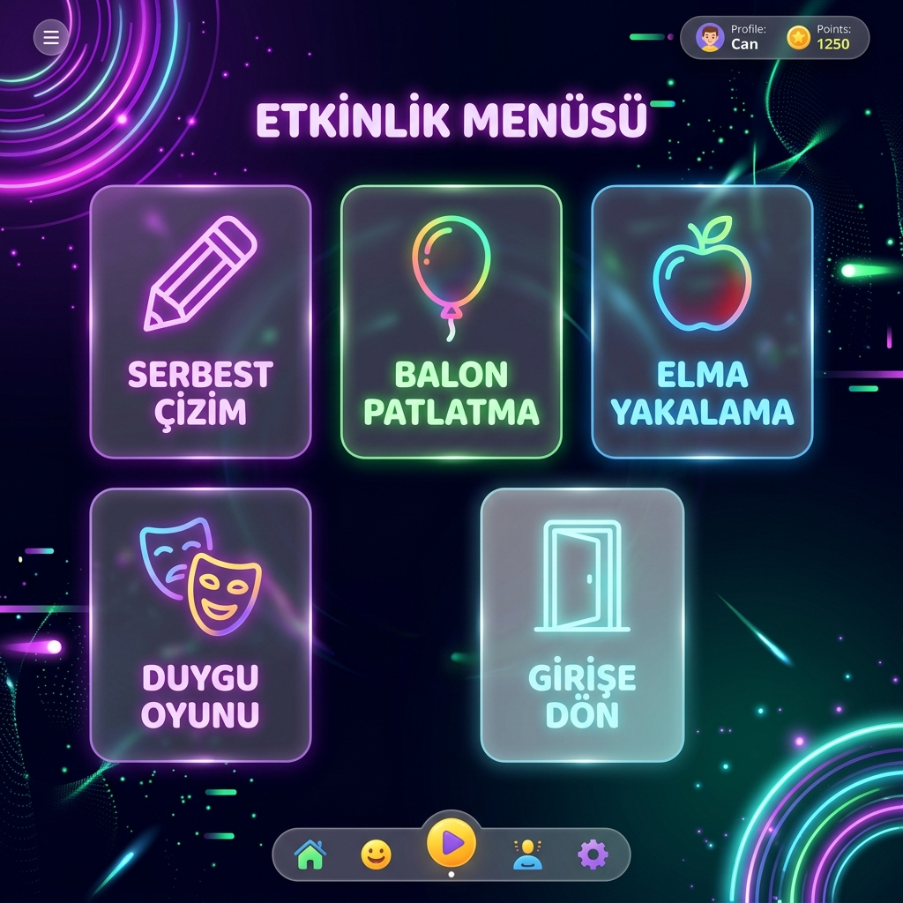
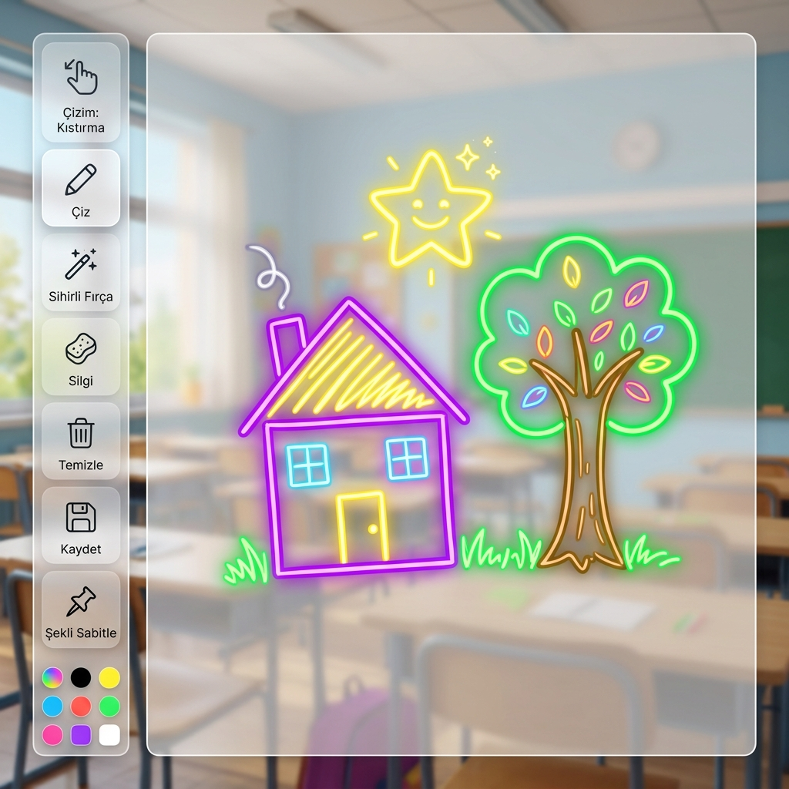
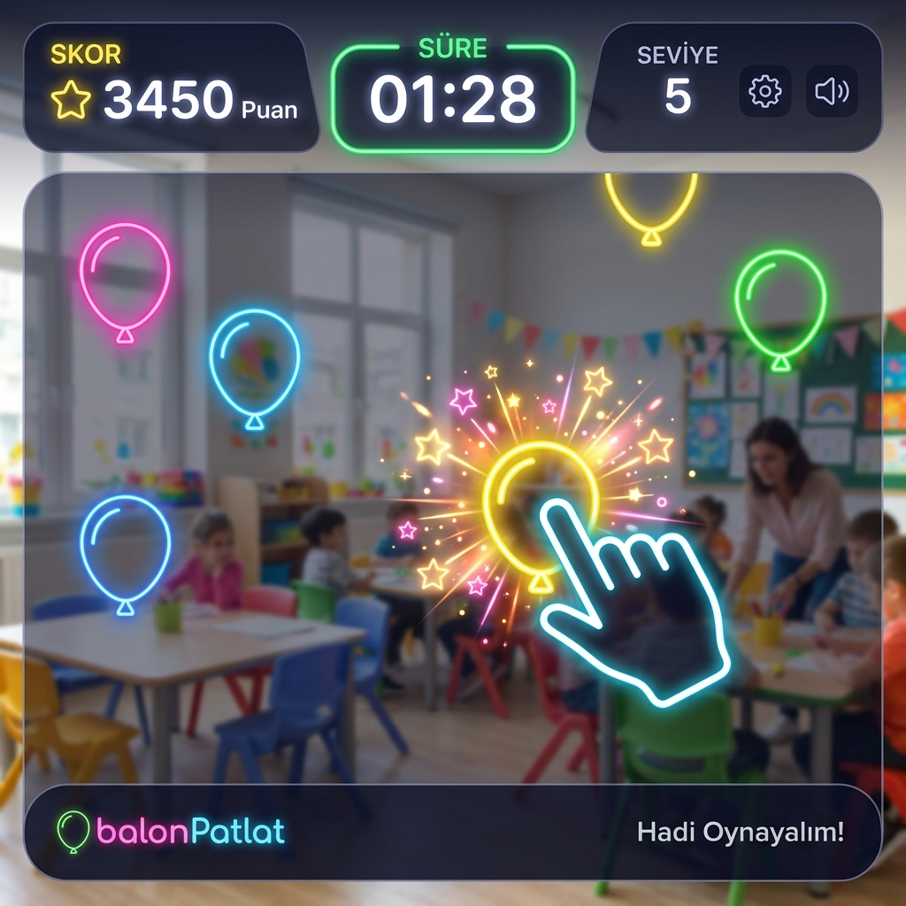
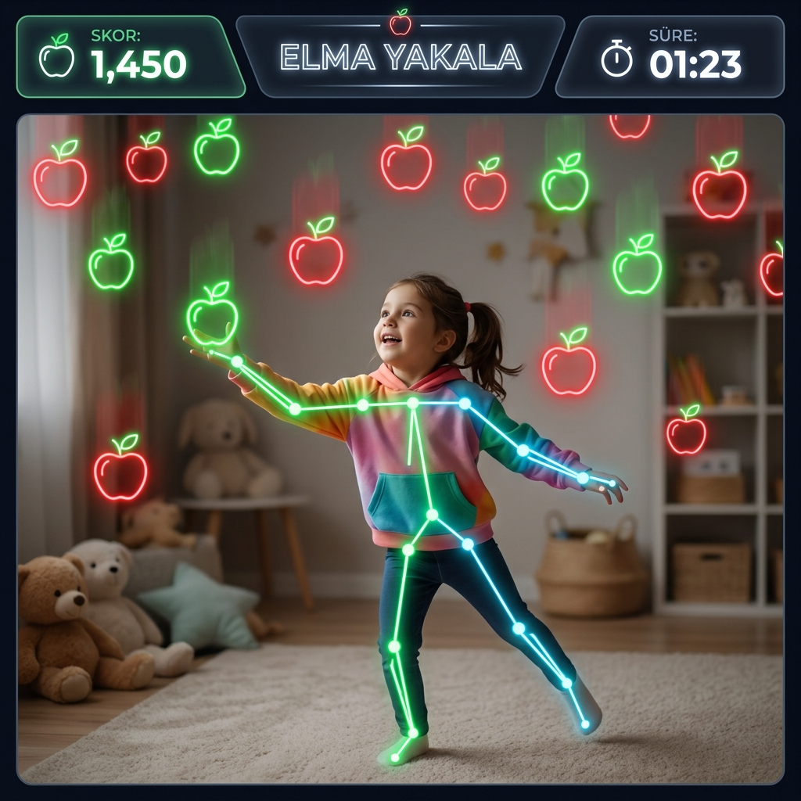
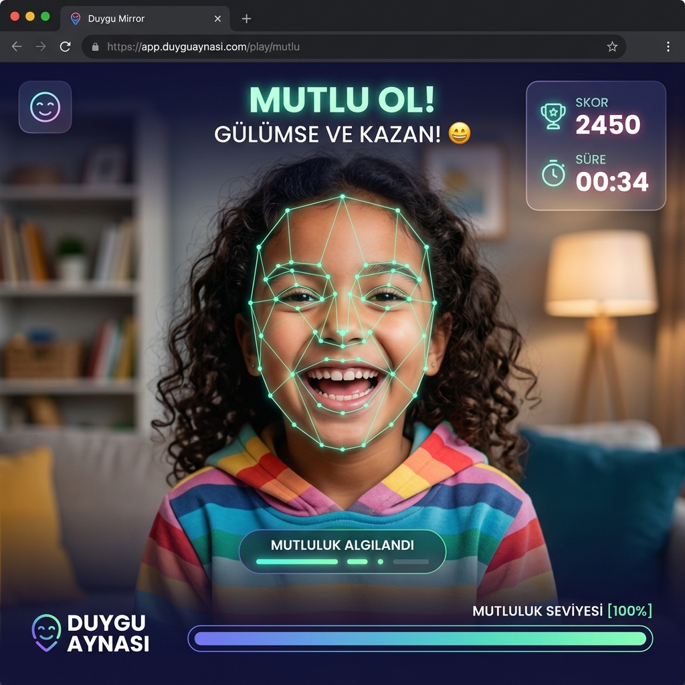

Web Tarayıcı Tabanlı, Yapay Zeka Destekli ve Temassız Okul Öncesi Eğitim ve Oyun Platformu
Minik Eller Atölyesi (Web Sürümü), okul öncesi dönemdeki çocukların (3-6 yaş) ince motor becerilerini ve el-göz koordinasyonunu geliştirmeyi amaçlayan yapay zeka destekli, web tarayıcısı tabanlı ve temassız bir dijital sanat ve eğitim platformudur.
Hangi İhtiyacı veya Problemi Çözüyor? Geleneksel ekran kullanımı çocukları pasif ve hareketsiz bırakmaktadır. Fiziksel dokunma gerektiren ekranlar çocuklarda postür bozukluklarına ve motor gelişiminin yavaşlamasına yol açabilmektedir. Bu proje, çocukların ekrana dokunmadan ellerini ve vücutlarını havada hareket ettirerek etkileşime girmesini sağlar. Böylece dijital oyun süreci fiziksel bir aktiviteye ve koordinasyon geliştirme aracına dönüşür.
Kimler Kullanacak? 3-6 yaş okul öncesi çocuklar, özel eğitim gereksinimi duyan bireyler, anaokulu öğretmenleri ve çocukları için sağlıklı teknoloji alternatifleri arayan aileler.
Uygulamanın Sınırları: Sistem, standart bir RGB web kamerası üzerinden el, yüz ve vücut takibi yapar. Herhangi bir ek donanım (sensör, özel kalem vb.) gerektirmez. WebAssembly ve hafif yapay zeka modelleri kullanılarak düşük donanımlı dizüstü bilgisayarlarda veya akıllı tahtalarda dahi akıcı çalışacak şekilde optimize edilmiştir. Çocukların güvenliğini sağlamak amacıyla tamamen istemci tarafında (offline/yerel) çalışır.
Çocukların teknolojiyle olan ilişkisini "pasif izleyicilikten" (video izleme, sürekli tüketim) çıkarıp "aktif üreticiliğe" (çizim yapma, kendi koordinasyonunu yönetme) dönüştürmek temel motivasyonumuzdur. Geliştirdiğimiz bu yazılım, Google MediaPipe JS API'leri ile pedagojik eğlence oyun prensiplerini modern web tasarımı standartlarıyla (Glassmorphism) birleştirmektedir. Herhangi bir kuruluma ihtiyaç duyulmadan tarayıcıdan anında erişilebilir olması eğitim kurumlarında yaygınlaşmasını kolaylaştırmaktadır.
Projede çocukların ürettiği eserleri sunucularda saklamak yerine yerel tarayıcı üzerinden PNG formatında indiren File-Based Local Storage yaklaşımı tercih edilmiştir. Bu kararın alınmasındaki gerekçeler şunlardır:
Web uygulaması, bileşenler arasındaki bağımlılıkları azaltmak amacıyla Model-View-Controller (MVC) tasarım modeline dayanmaktadır:

Projenin arayüzleri, okul öncesi çocukların motor ve görsel becerilerine göre renkli, yüksek kontrastlı ve neon ışıltılı efektlerle geliştirilmiştir.
Açıklama: Uygulama açıldığında çocukları doğrudan ayna modunda çalışan bir kamera karşılar. AI, çocuğun mimiklerini (göz kırpma, ağız açma) algılayarak ekrandaki neon kılavuz avatar emojisine aktarır. Çocuk gülümsediğinde mutluluk barı dolmaya başlar, bar %100 dolduğunda yeşil konfetiler eşliğinde kilit açılır ve menüye yönlendirilir.

Açıklama: Giriş yapıldıktan sonra açılan menü ekranında çocuklar el hareketleriyle butonları keşfeder. Butonun üzerinde el bekletildiğinde (dwell clicking) veya parmaklar kıstırıldığında ilgili oyun moduna geçiş sağlanır.

Açıklama: Çizim yaparken çocukların yorulmaması için çift mod geliştirilmiştir. "Kıstırma" modunda kalem tutar gibi başparmak ve işaret parmağı birleştirilir; hassas histerezis eşikleri (0.042 başlangıç, 0.065 devam) sayesinde çizginin kopması engellenir. "İşaret Parmağı" modunda ise sadece işaret parmağı havaya kaldırılıp çizilir.

Açıklama: Çocukların çizim yaparken görsel motivasyonunu artırmak amacıyla Sihirli Fırça modu entegre edilmiştir. Bu mod aktif edildiğinde, çizilen çizgi HSL renk uzayında zamana bağlı olarak sürekli renk değiştiren gökkuşağı neon rengini alır. Ayrıca, çizimin yapıldığı parmak ucundan fizik kurallarına göre dağılan parıltılı neon parçacıklar (sparks) saçılır.
Açıklama: Çocukların geometrik ve sembolik şekiller yerleştirmesini sağlayan modern bir vektörel düzenleme modülü eklenmiştir. Sol menüden bir şekil butonuna tıklandığında şekil ekranın sağ tarafında (aynalı koordinatta x = 250) neon parlamasıyla boş bir alanda oluşur. Çocuk elini şeklin üzerine getirip kıstırdığında (pinch) şekli sürükleyebilir; sağ altındaki yeşil halkayı kıstırdığında şekli büyütebilir. Dışarı tıkladığında şeklin seçimi kalkar ancak kilitlenmez. Çocuk şekli sabitlemek istediğinde sol paneldeki 📌 Şekli Sabitle butonuna basarak şekli arka plana damgalar ve üzerine boyama yapabilir.
Açıklama: Havaya doğru yükselen renkli neon balonları, çocuk parmağını balonların üzerine götürerek patlatır. Balonlar patlarken parçacık animasyonu ve dinamik ses sentezleyici ile patlama sesleri üretilir. El-göz koordinasyonunu geliştiren eğlenceli bir oyundur.

Açıklama: Yukarıdan düşen elmaları çocuk iki elini sağa sola açarak veya vücudunu kaydırarak yakalamaya çalışır. Ekranda çocuğun vücut iskelet yapısı neon çizgilerle gösterilir. Vücut koordinasyonunu ve fiziksel hareketliliği artıran dinamik bir oyundur.

Açıklama: Çocukların duygusal farkındalıklarını artırmak amacıyla geliştirilmiştir. AI, çocuğun yüzündeki 468'den fazla noktayı takip ederek anlık Face Mesh gridini çizer. Oyun, çocuktan belirli yüz ifadelerini (Mutlu, Şaşkın, Göz Kırpma vb.) yapmasını ister. AI bu ifadeleri gerçek zamanlı analiz ederek başarı durumuna göre puan verir.

Web uygulaması tamamen modüler, temiz ve yeniden kullanılabilir JavaScript sınıflarından oluşmaktadır. Projenin ana `web_app` hiyerarşisi aşağıdaki gibidir:
// handDetector.js - Koordinat Yumuşatma ve Histerezis Mantığı
onResults(results) {
if (results.multiHandLandmarks && results.multiHandLandmarks.length > 0) {
const landmarks = results.multiHandLandmarks[0];
const indexTip = landmarks[8]; // İşaret parmağı ucu
const thumbTip = landmarks[4]; // Başparmak ucu
// Üstel Düzeltme ile Titreme Engelleme (Smoothing)
this.smoothedX = this.smoothedX + 0.25 * (indexTip.x * width - this.smoothedX);
this.smoothedY = this.smoothedY + 0.25 * (indexTip.y * height - this.smoothedY);
// Çift Eşikli Histerezis (Kıstırma Mesafesi Kontrolü)
const dist = Math.sqrt(Math.pow(indexTip.x - thumbTip.x, 2) + Math.pow(indexTip.y - thumbTip.y, 2));
this.isPinchingState = this.isPinchingState ? (dist <= 0.065) : (dist <= 0.042);
// Tuval Çizim Tetikleyicisi
if (this.app.state === 'draw' && this.isPinchingState) {
this.canvasManager.continueStroke(this.smoothedX, this.smoothedY);
}
}
}// canvasManager.js - Şekil Seçimi ve Sabitleme Kontrolü
startStroke(x, y) {
if (this.selectedShape && this.selectedShape.isNearResizeHandle(x, y)) {
this.isResizingShape = true;
return;
}
for (let i = this.shapes.length - 1; i >= 0; i--) {
if (this.shapes[i].containsPoint(x, y)) {
this.selectedShape = this.shapes[i];
this.isDraggingShape = true;
window.app.uiManager.showBakeButton(true);
return;
}
}
if (this.selectedShape) {
this.selectedShape = null;
window.app.uiManager.showBakeButton(false);
}
this.isDrawing = true;
}Proje, okul öncesi eğitimde "aktif teknoloji kullanımı" vizyonuna başarıyla ulaşmıştır. Tüm oyun ve çizim modları web tarayıcıları üzerinde son derece stabil, akıcı ve temassız olarak çalışmaktadır.
Ortam Işığı Bağımlılığı: Web kamerası üzerinden yapılan takipler, çok karanlık veya aşırı ışıklı sınıflarda doğruluk oranının düşmesine sebep olabilmektedir.
Çözüm: Arayüze eklenen parlaklık/kamera kalitesi uyarısı ve JavaScript motoruna eklenen Kalman-tipi koordinat yumuşatma algoritmasıyla ışık dalgalanmalarından kaynaklanan el titremeleri %80 oranında sönümlenmiştir.
Platform, çocukların biyometrik verilerinin korunması amacıyla tamamen offline/yerel (istemci tarafında) çalışmaktadır. Tarayıcı sürümünde MediaPipe JavaScript modelleri ilk açılışta CDN üzerinden tarayıcı belleğine yüklenir; ancak çalışmaya başladıktan sonra tüm yapay zeka çıkarımları (el, yüz ve vücut takibi) kullanıcının bilgisayarında, tarayıcının yerel WebAssembly (WASM) sanal alanında (sandbox) gerçekleştirilir. Web kamerasından alınan görüntüler hiçbir uzak sunucuya veya buluta gönderilmez, tarayıcı belleğinde anlık olarak işlendikten hemen sonra yok edilir. Bu mimari yaklaşım, çocukların biyometrik verilerinin gizliliğini %100 güvence altına alarak KVKK ve GDPR standartlarına tam uyum sağlamaktadır.